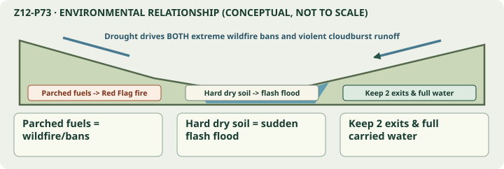

Z12-P73 · Extreme environments · New manuscript
Manage dry-to-flooded and drought-to-wildfire abrupt landscape shifts
Adapt immediately when prolonged drought flips into extreme wildfire danger OR sudden cloudburst flash flooding.
When it applies · Arid basins, drought-stressed forests, burn scars and summer backcountry corridors.
Equipment · Multi-channel alert receiver, extra safe water reserve, smoke protection awareness and multiple exit routes.

Actions
- Recognize the dual drought hazard: parched fuels and low humidity create explosive wildfire spread (triggering Red Flag Warnings and strict fire bans), while hardened hydrophobic soils and burn scars turn sudden summer rain into violent flash floods and debris flows.[X08, C18, X11]
- Verify current fire restrictions, active wildfire smoke plumes and upstream storm cells before every dry-season trip, keeping two independent road or trail exits mapped.[C01, C19, T13, X08]
- Carry extra safe water whenever seasonal creeks dry up or warm lakes develop blue-green algal blooms—never push forward hoping a dry desert or drought-stricken creek will flow ahead.[W14, W15, X08]
Failure recognition · Assuming a drought-parched canyon has zero flood hazard, or ignoring distant smoke plumes and Red Flag Warnings while camping down a single dead-end forest road.[X08, C18, C19, T13]
Verify · Confirm fire-restriction status, upstream storm/burn-scar risks, full carried water supply and two open exit paths before departing.[C01, X08, X11, T13, ED]
Stop or change course · Active Red Flag wildfire approach, heavy smoke, Flash Flood Warning or dry emergency water reserves trigger immediate early evacuation along open routes.[C19, T16, T13, X08]
Evidence and editorial notes
- C01 · Minnesota DNR · Fire Danger and Burning Restrictions (current web edition; verify at use)
- Section: Fire danger and burning restrictions map and links · Conditions: Current Minnesota location, date and jurisdiction
Support: Check current restrictions and local authority requirements before lighting.
Limitations: Restrictions can change daily with humidity, wind, and drought; verify immediately before use. · Conflicting evidence: None; local jurisdiction always supersedes general notes.
Editorial note: Mandatory legal check before any live fire card. · Specialist reviewer: Fire prevention and local land management
Primary source · checked 2026-11-24 - C18 · NWS · Wildfire Weather Safety (current web edition)
- Section: Wildfire Weather Safety > Red Flag and Wind Conditions · Conditions: Low humidity, dry fuels, and gusty winds
Support: Red Flag Warnings and high wind advisories signal extreme fire-spread potential where embers travel downwind and small sparks rapidly escape containment.
Limitations: Local gusts can exceed forecast averages along ridges and open clearings. · Conflicting evidence: None; reinforces wind-abort threshold before ignition.
Editorial note: Establishes Red Flag / high-wind conditions as automatic no-fire triggers. · Specialist reviewer: Wildland fire safety and meteorology
Primary source · checked 2026-11-24 - C19 · FEMA / Ready.gov · Wildfires (current web edition)
- Section: Wildfires > Stay Safe and Smoke Protection · Conditions: Approaching wildfire or heavy smoke in camp or community
Support: Evacuate early along open routes per official orders, protect airways from heavy smoke, and avoid turning back into active fire corridors.
Limitations: Cloth face coverings do not filter fine wildfire smoke particles; fitted particulate respirators or clean indoor air are distinct interventions. · Conflicting evidence: None; coordinates with NWS-WILDFIRE.
Editorial note: Covers wildfire escape and smoke decision thresholds in Z01/Z03. · Specialist reviewer: Emergency management and fire safety
Primary source · checked 2026-11-24 - T13 · FEMA / Ready.gov · Evacuation (current web edition)
- Section: Evacuation > Before, During, and After Evacuation · Conditions: Developing wildfire, flood, storm, or infrastructure emergency
Support: Identify multiple exit routes ahead of time, keep essential go-bags and fuel ready, leave promptly when authorities order evacuation, and do not return until officials declare the area safe.
Limitations: Late departure can trap groups behind road closures, smoke, or rising water. · Conflicting evidence: None; pairs with NWS-FLOOD and READY-WILDFIRE.
Editorial note: Establishes clear leave-early decision thresholds for multi-hazard scenarios. · Specialist reviewer: Emergency management
Primary source · checked 2026-11-24 - T16 · NWS · Flood Safety (current web edition)
- Section: Flood Safety > Turn Around Don't Drown and Flash Flood Warnings · Conditions: Watch vs Warning decisions near rivers, creeks, and low roads
Support: Distinguish a Watch (conditions favorable; prepare and adjust route) from a Warning (hazard imminent or occurring; move to higher ground immediately); never walk or drive into floodwater.
Limitations: Flash floods can crest rapidly in narrow drainages before warnings reach offline hikers. · Conflicting evidence: None; aligns with E04 and T07.
Editorial note: Clarifies Watch vs Warning decision thresholds in Z01 scenarios. · Specialist reviewer: Emergency management and meteorology
Primary source · checked 2026-11-24 - W14 · CDC · How to Create an Emergency Water Supply (current web edition)
- Section: How Much Water to Store; Rotation · Conditions: Household emergency water reserve planning
Support: Plan at least 1 gallon per person per day for at least 3 days (more for heat, illness, pregnancy, or pets); rotate self-filled water every 6 months.
Limitations: Backcountry active travel demands vary sharply by exertion, temperature, and humidity. · Conflicting evidence: None; household baseline is cited only as a planning floor, not a physiological maximum.
Editorial note: Distinguishes household storage floors from active field hydration demands. · Specialist reviewer: Household preparedness and drinking-water safety
Primary source · checked 2026-11-24 - W15 · CDC · Harmful Algal Bloom (HAB)-Associated Illness (current web edition)
- Section: Harmful Algal Blooms > Drinking Water and Exposure · Conditions: Surface water with discolored scum, mats, foul odor, or active HAB advisory
Support: Avoid contact and do not drink water from suspected harmful algal blooms; boiling does not destroy cyanotoxins and can concentrate them as water evaporates.
Limitations: Cyanotoxins can persist in visually clear water after a bloom dissipates. · Conflicting evidence: Contradicts naive boil-everything advice; CDC/EPA HAB warnings explicitly prohibit boiling HAB water.
Editorial note: Establishes HABs as a chemical-toxin rejection trigger, not a microbial boil target. · Specialist reviewer: Environmental health and drinking-water safety
Primary source · checked 2026-11-24 - X08 · NWS · Drought Safety (current web edition)
- Section: Drought Safety > Dry Soils, Dust Storms and Extreme Fire Risk · Conditions: Arid regions, seasonal drought and dry-basin travel
Support: Drought dries seasonal springs, hardens soils so sudden rain runs off instantly into flash floods, raises wildfire intensity and produces blinding dust storms (haboobs) where drivers must pull completely off roadways with lights off.
Limitations: Flash-flood risk rises paradoxically on parched hydrophobic desert ground. · Conflicting evidence: None; complements NPS-DESERT and NWS-WILDFIRE.
Editorial note: Grounds desert flash-flood, dust-storm and dry-source cards in Z12. · Specialist reviewer: Meteorology and arid-environment safety
Primary source · checked 2026-11-24 - X11 · FEMA / Ready.gov · Landslides and Debris Flow (current web edition)
- Section: Landslides and Debris Flow > Warning Signs and Burn Scars · Conditions: Steep slopes, recent wildfire burn scars and saturated mountain/coastal terrain
Support: Heavy rainfall on steep terrain or wildfire burn scars triggers fast-moving debris flows; watch for rumbling, tilting trees, sudden muddy stream surges or new ground cracks and evacuate perpendicular/uphill away from valleys immediately.
Limitations: Debris flows travel faster than a person can run and recur in previously scarred drainages. · Conflicting evidence: None; pairs with E04 and E17.
Editorial note: Supports mountain/burn-scar landslide and debris-flow hazard cards. · Specialist reviewer: Geological hazard and emergency management
Primary source · checked 2026-11-24
Source lineage · NWS drought/wildfire/flood and Ready.gov; new manuscript · Classification · New manuscript.